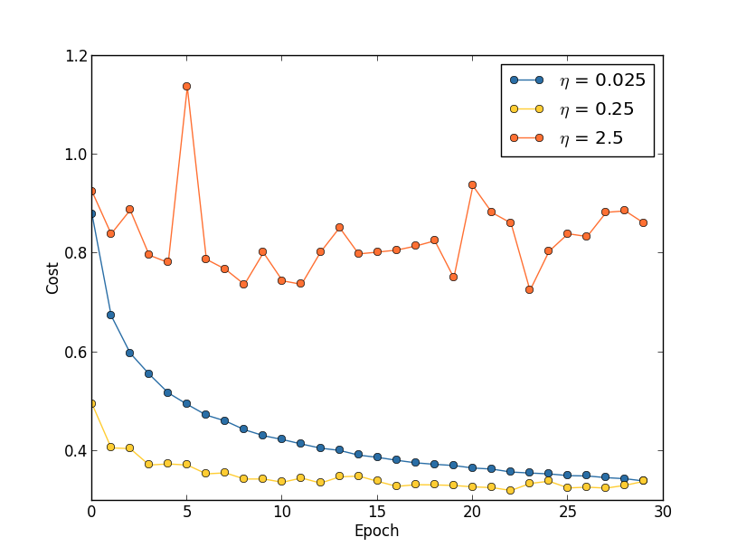

Notes for the book.
Source code for the book.
Chapter 3: Improving the way neural networks learn
Backpropagation was the basic swing, the fooundation for learning in most work on neural networks. Now we will learn the tricks.
These include,
- A better cost function, known as cross entropy
- Four regularization methods.
- A better method for weight initialization.
- A set of heuristics to help choose good hyper-parameters.
- And several other techniques,
The cross-entropy cost function
Yet while unpleasant, we learn quickly when we’re decisively wrong.
By contrast, we learn slowly when our errors are less well defined.
However, turns out this is not always the case with the neural networks we train.
If the results are very wrong, it might very well be the case that the activations are close to 0 or 1. And thus the gradients of our sigmoid activation would be very small.
This would cause the learning to progress very slowly.
Introducing the cross-entropy cost function
$$\begin{eqnarray} C = -\frac{1}{n} \sum_x \left[y \ln a + (1-y ) \ln (1-a) \right], \tag{57}\end{eqnarray}$$
Barring the explanation of what it does,
Here is the derivative,
$$\begin{eqnarray} \frac{\partial C}{\partial w_j} = \frac{1}{n} \sum_x x_j(\sigma(z)-y). \tag{61}\end{eqnarray}$$
Now, this expression says that the change is directly proportional to the error, which is what we would intuitively expect our network to do.
The cross-entropy function was specially chosen to have just this property.
Ans, in a similar way, we can calculate the partial derivative for the bias.
$$\begin{eqnarray}
\frac{\partial C}{\partial b} = \frac{1}{n} \sum_x (\sigma(z)-y).
\tag{62}\end{eqnarray}$$
When should we use this? Probably always,..
What does the cross-entropy mean? Where does it come from?
It comes naturally from our expected gradients,
If we start with,
$$\begin{eqnarray}
\frac{\partial C}{\partial w_j} & = & x_j(a-y) \tag{71}\
\frac{\partial C}{\partial b } & = & (a-y). \tag{72}\end{eqnarray}$$
We can come up with this equation,
$$\begin{eqnarray}
C = -\frac{1}{n} \sum_x [y \ln a +(1-y) \ln(1-a)] + {\rm constant},
\tag{77}\end{eqnarray}$$
Cross-entropy also has significance in information theory, where it tells about information gain.
Softmax
The softmax activation,
$$\begin{eqnarray}
a^L_j = \frac{e^{z^L_j}}{\sum_k e^{z^L_k}},
\tag{78}\end{eqnarray}$$
What’s so good about it,.??
$$\begin{eqnarray}
\sum_j a^L_j & = & \frac{\sum_j e^{z^L_j}}{\sum_k e^{z^L_k}} = 1.
\tag{79}\end{eqnarray}$$
That is, we can interpret it in terms of probabilities.
Which can help us in providing a more intuitive explanation of the results.
To the mathematicians at least.
But, how does that help with the learning slowdown problem??
Let us consider this cost function, (called log-likelihood)
$$\begin{eqnarray}
C \equiv -\ln a^L_y.
\tag{80}\end{eqnarray}$$
Using this cost with softmax activation, we can derive the gradients w.r.t. weights and bias as,
$$\begin{eqnarray}
\frac{\partial C}{\partial b^L_j} & = & a^L_j-y_j \tag{81}\
\frac{\partial C}{\partial w^L_{jk}} & = & a^{L-1}_k (a^L_j-y_j)
\tag{82}\end{eqnarray}$$
Which is strikingly similar in form to the gradients we calculated using sigmoid activation with cross-entropy loss. And hence, the same intuitions apply.
So, what should we use then,.?
sigmoid output layer with cross-entropy loss, or
softmax output layer with log0likelihood loss.
Actually, both work well. However, softmax log-likelihoodis worth using when we want to interpret output activations as probabilities.
Overfitting and regularization
Models with large number of free parameters can describe amazingly wide range of phenomena. That doesn’t make it a good model. It just means that the model has enough freedom to describe any data set of a given size, without really capturing any genuine insights about the phenomena.
This model may work for the existing data, however it won’t be able to generalize to new situations.
Our simple model for MNIST dataset described earlier has 24,000 parameters. That’s a lot of parameters.
Current state-of-the-art models have millions or even billions of parameters. How can we trust those results?
Define overfitting here…
Talking about cross-validation,…
Get more training data to reduce overfitting!!!!
Regularization
Techniques used to reduce overfitting.
Weight decay or L2 regularization.
$$\begin{eqnarray} C = -\frac{1}{n} \sum_{xj} \left[ y_j \ln a^L_j+(1-y_j) \ln
(1-a^L_j)\right] + \frac{\lambda}{2n} \sum_w w^2.
\tag{85}\end{eqnarray}$$
The first term is the same old cross-entropy loss function. The second term, namely the squared sum of all weights, is the regularization that we’ve added.
and $\lambda > 0$, is called the regularization parameter.
Worth noting: The regularization terms doesn’t include biases.
Of course we can add regularization to other cost functions as well.
$$\begin{eqnarray} C = \frac{1}{2n} \sum_x |y-a^L|^2 +
\frac{\lambda}{2n} \sum_w w^2.
\tag{86}\end{eqnarray}$$
Intuitively, the effect of regularization is to make it so the network prefers to learn small weights, all other things being equal.
But first, let’s see how this effects our equations for gradients and weight/bias updates.
$$\begin{eqnarray}
\frac{\partial C}{\partial w} & = & \frac{\partial C_0}{\partial w} +
\frac{\lambda}{n} w \tag{88}\
\frac{\partial C}{\partial b} & = & \frac{\partial C_0}{\partial b}.
\tag{89}\end{eqnarray}$$
And,
$$\begin{eqnarray}
b & \rightarrow & b -\eta \frac{\partial C_0}{\partial b}.
\tag{90}\end{eqnarray}$$
$$\begin{eqnarray}
w & \rightarrow & w-\eta \frac{\partial C_0}{\partial
w}-\frac{\eta \lambda}{n} w \tag{91}\
& = & \left(1-\frac{\eta \lambda}{n}\right) w -\eta \frac{\partial
C_0}{\partial w}.
\tag{92}\end{eqnarray}$$
A analysis of results with/without regularization on the MNIST data.
Conclusion: Regularization helps reduce overfitting. But how??
Why does regularization help reduce overfitting?
A standard story people tell to explain what’s going on is along the following lines: smaller weights are, in some sense, lower complexity, and so provide a simpler and more powerful explanation for the data, and should thus be preferred.
An example with linear/polynomial regression.
The idea is that, larger weights in or neural net would allow the model to gather more information, and hence would allow it to learn the noise in the input.
Simpler explanations can be more attractive, but that doesn’t mean they are right, this intuition should be used with great caution! Further, deciding which of the explanations is simpler can be quite subtle and subjective. Finally, the true test of a model is not its simplicity, but how well it explains the unseen/new(for the model) phenomena.
With that said, it is an empirical fact that regularization helps to generalize better.
Still, we don’t have an entirely satisfactory understanding of what’s going on.
We don’t even have a good understanding of how generalization works.
This is particularly galling because in everyday life we humans generalize phenomenally well.
We have a system - the human brain - with huge number of free parameters. And we can generalize with very few training examples. Our brains in some sense are regularizing amazingly well. How?
Back to our problem, it has been conjectures that the dynamics of gradient descent learning in multilayer nets has a self-regularizing effect. This is fortunate, but disquieting as we don’t understand why.
In the meantime, we would just use regularization whenever we can.
Other techniques for regularization
L1 regularization:
$$\begin{eqnarray} C = C_0 + \frac{\lambda}{n} \sum_w |w|.
\tag{95}\end{eqnarray}$$
Dropout:
Here we randomly(and temporarily) delete half* the hidden neurons in the network, while leaving all the weights and other neurons untouched.
We do this only during the training,. When we run the full network during testing, we need to halve the weights outgoing from the hidden units.
How does it do regularization? It is a lot like using a committee of smaller networks. The different networks will overfit in different ways, and hopefully, the net effect would reduce overfitting.
In another explanation, using dropout forces the neurons to learn more robust features, reducing co-adaptations.
Artificially expanding the training data:
All about data augmentation
Very powerful. Very useful.
Weight initialization
About using Gaussian distribution for input weights, and its pitfalls.
Handwriting recognition revisited: the code
The updated Network class,
class Network(object):
def __init__(self, sizes, cost=CrossEntropyCost):
self.num_layers = len(sizes)
self.sizes = sizes
self.default_weight_initializer()
self.cost=cost
Weight initialization, using Gaussian random variables with zero mean and standard deviation 1 divided by the square root of number of connections
def default_weight_initializer(self):
self.biases = [np.random.randn(y, 1) for y in self.sizes[1:]]
self.weights = [np.random.randn(y, x)/np.sqrt(x)
for x, y in zip(self.sizes[:-1], self.sizes[1:])]
Here is the old weight initializer, using only Gaussian random variables,
def large_weight_initializer(self):
self.biases = [np.random.randn(y, 1) for y in self.sizes[1:]]
self.weights = [np.random.randn(y, x)
for x, y in zip(self.sizes[:-1], self.sizes[1:])]
For our newly added cost attribute,
class CrossEntropyCost(object):
@staticmethod
def fn(a, y):
return np.sum(np.nan_to_num(-y*np.log(a)-(1-y)*np.log(1-a)))
@staticmethod
def delta(z, a, y):
return (a-y)
It is implemented as a class since along with the actual cost, we also need a way to calculate the gradient. This class encapsulates both things.
And, here is the QuadraticCost that we were using earlier, abstracted into a class,
class QuadraticCost(object):
@staticmethod
def fn(a, y):
return 0.5*np.linalg.norm(a-y)**2
@staticmethod
def delta(z, a, y):
return (a-y) * sigmoid_prime(z)
How to choose a neural network’s hyper-parameters?
That’s a huge space to get lost in.
Broad strategy:
Start with the problem of doing better than chance.
The simplest(also fastest or easiest) method that can get you started.
Just make sure to get quick feedback of how the model is doing.
Then we start with parameter tuning.
Learning rate:
A sample result while training in MNIST. 
More rules of thumb about how to choose and change the learning rate.
Use early stopping to determine the number of training epochs:
Again, rules of thumb on when to use this, and what to do with it.
Learning rate schedule:
Its good to reduce the learning rate when accuracy starts to plateau.
The regularization parameter:$\lambda$
Start with none.
Find a good $\eta$.
Play with $\lambda$.
Fine tune $\lambda$.
Fine tune $\eta$ again.
Mini-batch size:
This one depends upon the resources available too.
Using a larger mini-batch may make things go faster if sufficient memory is available.
Automated techniques:
Cross validation: Grid search and its smarter cousins.
The space of hyper-parameters is so large, that one never really finishes optimizing, one only abandons the network to posterity.
Other techniques
Variations on stochastic gradient descent
Hessian technique:
Uses higher order derivatives.
Can converge faster than gradient descent
Difficult to apply in practice because of the huge size of the matrix.
Momentum-based gradient descent:
Based on similar intuition of using higher order derivatives.
Introduces a notion of velocity. Gradient affects the velocity and not the position directly.
Introduces a kind of friction term, which tends to gradually reduce the velocity.
$$\begin{eqnarray}
v & \rightarrow & v' = \mu v - \eta \nabla C \tag{107}\
w & \rightarrow & w' = w+v'.
\tag{108}\end{eqnarray}$$
Other approaches of minimizing the cost function:
BFGS and L-BFGS, and more…
Other models of artificial neuron
- tanh instead of sigmoid
- relu : This is the new shit